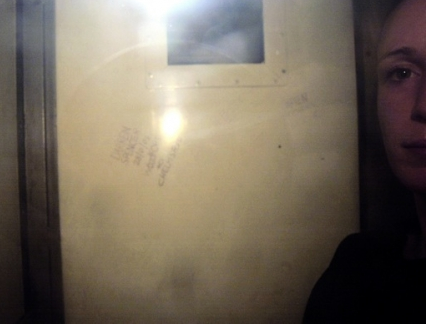

|
|

"موفقیت" کمپین؟ / خلیل طالقانی
سه شنبه10 فروردین 1389
تغییر برای برابری - دوستی به طعنهای تلخ میگفت کمپین یک میلیون امضاء دارد به جزء کوچکی از اهدافش نزدیک میشود بدین معنی که در ماجرای بازداشتها و محاکمههای اخیر تقریباً هیچ تبعیضی بر زنان روا نمیشود و حق زنان را نیز به اندازۀ مردان کف دستشان میگذارند. تلخی این طعنه وقتی بیشتر به جان مینشیند که دریابیم در این میانهای که "ز منجنیق فلک سنگ فتنه می بارد" سهم زنان و مردان از این سنگ هم یکسان نیست.
برخی از این نابرابریها به قرار زیر است:
1. زندانی سیاسی زن همیشه "مورد اخلاقی" پیدا میکند، مخصوصاً اگر شهرتی به دینجویی و دینخواهی نداشته باشد. مکانیزمهای حرکت بر محور این "موردها" و نتایج جانسوزش بسیار متنوع و خارج از این حد این یادداشت کوتاه است. اما فشار حاصله از سقوط از قالب فعال سیاسی اجتماعی و قرارگرفتن در هیئت بدکارگی چنان هولناک است که سامانههای عصبی، احساسی، فکری و هویتی را از هم میگسلاند. دست شستن از همۀ آرمانها و حتا امید به زندگی درچنین شرایطی بسیار طبیعی به نظر میرسد.
2. اگر آزار جنسی زبانی سکۀ رایج روزگار ماست و کوچه و خیابان و محل کار نمیشناسد، زنِ زندانی به گوشه رانده شده دربرابر چنین آزاری بیپناهترین است. اگر در مکانهای عمومی بتوان به مدد دادوفریاد "غیرتمندی" را به مدد خواست یا به کمک تاکسی از مهلکه گریخت، زنِ زندانی درهم ریخته و فروکوفته چارهای جز "خوردن و دم بر نیاوردن" ندارد .
3. زنِ زندانی در بهترین برخورد، شماتت و تحقیر میشود که آلت دست دیگران قرار گرفته و آیندۀ خود را به خطر انداخته چون طبیعی است که زنان از خود اراده و فکری ندارند و حتماً "دیگرانی" از نادانی وی سوء استفاده کرده اند. بدیهی است که در این حالت باید آن دیگری سوءاستفادهچی را معرفی کرد و داستانهای فریب فکری خود را بازگفت و کمک کرد تا نیات اصلی آن دیگری در قالب سناریوهای ازپیش پرداخته شده برملا شود.

4. بسیاری از زنان زندانی مادر هستند و فعالیتهای اجتماعیشان سبب نشده بار عمدۀ نگهداری از فرزند از دوششان برداشته شود. در چنین شرایطی نگرانی برای فرزندان و فشار عاطفی حاصل از آن برای مادران به مراتب بیشتر از پدران است. مادرانِ زندانی در کنار همۀ مسائل زندان یکسره به فکر خواب، رژیم غذایی، حساسیت، آسیب پذیری و بیماری فرزندان خود هستند. هرلحظه به فکر اینکه بچه پیش کیست و چه میکند.
5. برخی از زنان زندانیای که از خانوادههای سنتی برآمدهاند، درچنین شرایطی آماج شماتتِ خانوادهها نیز هستند که اگر سرشان را زیرانداخته بودند، لگد به بخت خود نزده بودند، دنبال خوشبختی خود رفته بودند، دچار چنین وضعیتی نمی شدند. این شماتتها پس از آزادی به فشارها و پیشنهادهای نه چندان محترمانه تبدیل می شود.
6. وضعیت شکننده و فرودست زنان دربازار کار سبب میشود که زنان زندانی خیلی زود کار خود را از دست بدهند و امکان بازگشت به کار آنان پس از آزادی به مراتب کمتر از مردان باشد. تجربههای بازگفته شده نشان میدهد که آسیبپذیری زنان در این زمینه بسیار بیش از مردان است.
در یک تقسیمبندی سردستی از دیدگاه صاحبان قدرت میتوان دو هدف برای زندان در نظر گرفت: نخست آنکه زندانی با محرومیت از برخی از آزادیها جزای کارهایی را که مجریان قانون مجرمانه میپنداشتهاند تحمل کند. با این هدف زندانی از حقوق اجتماعی خود محروم نمیشود (کمااینکه در روزهای انتخابات اکثر زندانیان را برای رأیگیری پای صندوقهای رأی میبرند). هدف دوم اما می تواند این باشد که با توسل به همۀ ابزارهای خشونت زندانی را به نهایت درماندگی و فروماندگی کشاند چنان که در آینده تکرار آن کارهایی به سبب آن زندانی شده به مخیلهاش هم خطور نکند. درجامعۀ مردسالاری که زنان به طور روزمره در معرض انواع خشونتهای نظاممند قراردارند، زندان اساساً ادامۀ زندگی خشونتآمیز بیرون زندان است. اما در زندانی که با هدفِ دوم ایجاد می شود، خشونت بر زنان ابعاد وحشتناکی می یابد، حتی اگر با معیارهای جهان سوم قضاوت کنیم.
به گمان من کمپین یک میلیون امضاء باید در ابعاد وحشتناک این خشونت قدری تأمل کند و با جمعبندی از تجربیات اعضایش خواستار برچیده شدنِ خشونتهایی شود که زنانِ زندانی به صرفِ زن بودنشان تحمل می کنند.